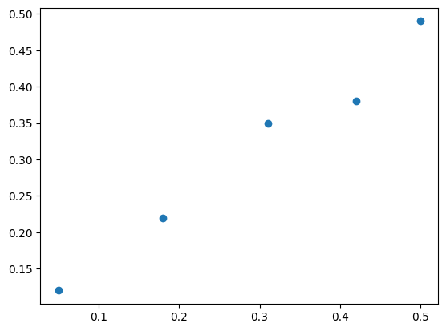
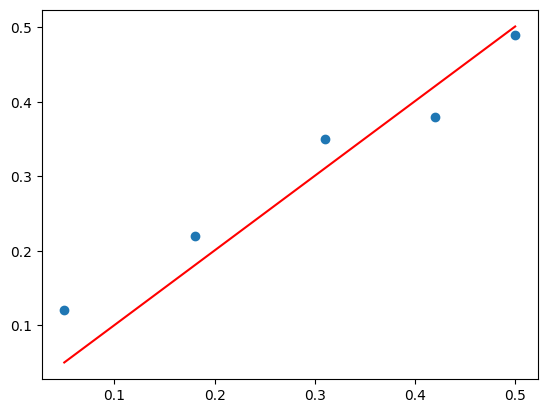

from numpy import array
from numpy import mean, var, std, cov, corrcoef
from numpy.linalg import eig, inv, pinv, qr, lstsq
from sklearn.decomposition import PCA
from matplotlib import pyplotStatistics
Introduction to Multivariate Statistics
Expected Value and Mean
v = array([1,2,3,4,5,6])
print(v)[1 2 3 4 5 6]result = mean(v)
print(result)3.5M = array([
[1,2,3,4,5,6],
[1,2,3,4,5,6]])
print(M)[[1 2 3 4 5 6]
[1 2 3 4 5 6]]col_mean = mean(M, axis=0)
print(col_mean)[1. 2. 3. 4. 5. 6.]row_mean = mean(M, axis=1)
print(row_mean)[3.5 3.5]Variance and Standard Deviation
v = array([1,2,3,4,5,6])
print(v)[1 2 3 4 5 6]result = var(v, ddof=1)
print(result)3.5M = array([
[1,2,3,4,5,6],
[1,2,3,4,5,6]])
print(M)[[1 2 3 4 5 6]
[1 2 3 4 5 6]]col_var = var(M, ddof=1, axis=0)
print(col_var)[0. 0. 0. 0. 0. 0.]row_var = var(M, ddof=1, axis=1)
print(row_var)[3.5 3.5]col_std = std(M, ddof=1, axis=0)
print(col_std)[0. 0. 0. 0. 0. 0.]row_std = std(M, ddof=1, axis=1)
print(row_std)[1.87082869 1.87082869]Covariance and Correlation
x = array([1,2,3,4,5,6,7,8,9])
print(x)[1 2 3 4 5 6 7 8 9]y = array([9,8,7,6,5,4,3,2,1])
print(y)[9 8 7 6 5 4 3 2 1]Sigma = cov(x,y)[0,1]
print(Sigma)-7.5corr = corrcoef(x,y)[0,1]
print(corr)-1.0Covariance Matrix
X = array([
[1, 5, 8],
[3, 5, 11],
[2, 4, 9],
[3, 6, 10],
[1, 5, 10]])
print(X)[[ 1 5 8]
[ 3 5 11]
[ 2 4 9]
[ 3 6 10]
[ 1 5 10]]Sigma = cov(X.T)
print(Sigma)[[1. 0.25 0.75]
[0.25 0.5 0.25]
[0.75 0.25 1.3 ]]Principal Component Analysis
Calculate Principal Component Analysis
A = array([
[1,2],
[3,4],
[5,6]])
print(A)[[1 2]
[3 4]
[5 6]]M = mean(A.T, axis=1)C = A - MV = cov(C.T)values, vectors = eig(V)print(vectors)[[ 0.70710678 -0.70710678]
[ 0.70710678 0.70710678]]print(values)[8. 0.]P = vectors.T.dot(C.T)
print(P.T)[[-2.82842712 0. ]
[ 0. 0. ]
[ 2.82842712 0. ]]Principal Component Analysis in scikit-learn
A = array([
[1,2],
[3,4],
[5,6]])
print(A)[[1 2]
[3 4]
[5 6]]pca = PCA(2)pca.fit(A)PCA(n_components=2)In a Jupyter environment, please rerun this cell to show the HTML representation or trust the notebook.
On GitHub, the HTML representation is unable to render, please try loading this page with nbviewer.org.
PCA(n_components=2)
print(pca.components_)[[ 0.70710678 0.70710678]
[-0.70710678 0.70710678]]print(pca.explained_variance_)[8. 0.]B = pca.transform(A)
print(B)[[-2.82842712e+00 -2.22044605e-16]
[ 0.00000000e+00 0.00000000e+00]
[ 2.82842712e+00 2.22044605e-16]]Linear Regression
data = array([
[0.05, 0.12],
[0.18, 0.22],
[0.31, 0.35],
[0.42, 0.38],
[0.5, 0.49]])
print(data)[[0.05 0.12]
[0.18 0.22]
[0.31 0.35]
[0.42 0.38]
[0.5 0.49]]X, y = data[:, 0], data[:,1]
X = X.reshape(len(X), 1)Linear Regression Dataset
pyplot.scatter(X, y)
pyplot.show()
Solve via Inverse
b = inv(X.T.dot(X)).dot(X.T).dot(y)
print(b)[1.00233226]yhat = X.dot(b)pyplot.scatter(X,y)
pyplot.plot(X, yhat, color='red')
pyplot.show()
Solve via QR Decomposition
Q, R = qr(X)
b = inv(R).dot(Q.T).dot(y)
print(b)[1.00233226]yhat = X.dot(b)pyplot.scatter(X, y)
pyplot.plot(X, yhat, color='red')
pyplot.show()
Solve via SVD and Pseudoinverse
b = pinv(X).dot(y)
print(b)[1.00233226]yhat = X.dot(b)pyplot.scatter(X, y)
pyplot.plot(X, yhat, color='red')
pyplot.show()Solve via Convenience Function
b, residuals, rank, s = lstsq(X, y)
print(b)[1.00233226]/tmp/ipykernel_21840/4284049170.py:1: FutureWarning: `rcond` parameter will change to the default of machine precision times ``max(M, N)`` where M and N are the input matrix dimensions.
To use the future default and silence this warning we advise to pass `rcond=None`, to keep using the old, explicitly pass `rcond=-1`.
b, residuals, rank, s = lstsq(X, y)yhat = X.dot(b)pyplot.scatter(X, y)
pyplot.plot(X, yhat, color='red')
pyplot.show()